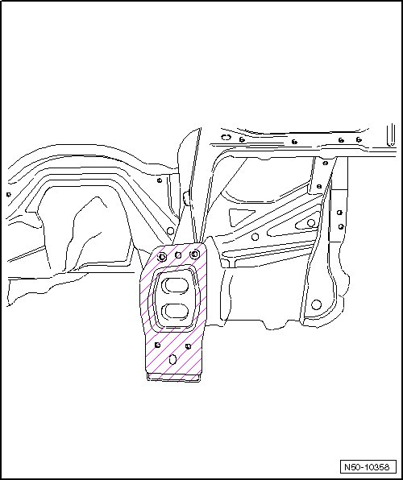
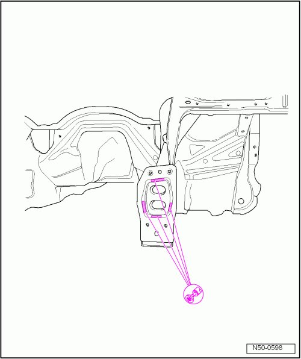
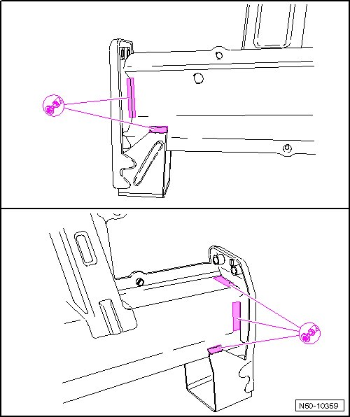
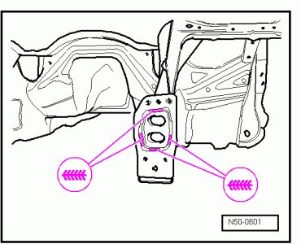
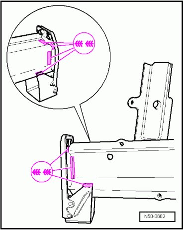

Front Bumper Bracket: Service and Repair
Bumper Bracket
CAUTION!
Before starting any repairs always follow safety precautions located in.

Removing

- Separate the original connection.

- Grind out welding seams.
- Remove residual material.
Installation
Welding
Replacement part
• Bumper bracket (replacement part identification: impact absorber mount)
- Align and secure new part with vehicle standing on wheels or alignment bracket set.
- Weld in bumper bracket, gas-shielded arc continuous weld seam.

- Reproduce remainder of joint, gas-shielded arc continuous weld seam.
